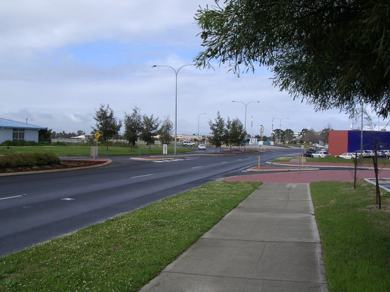
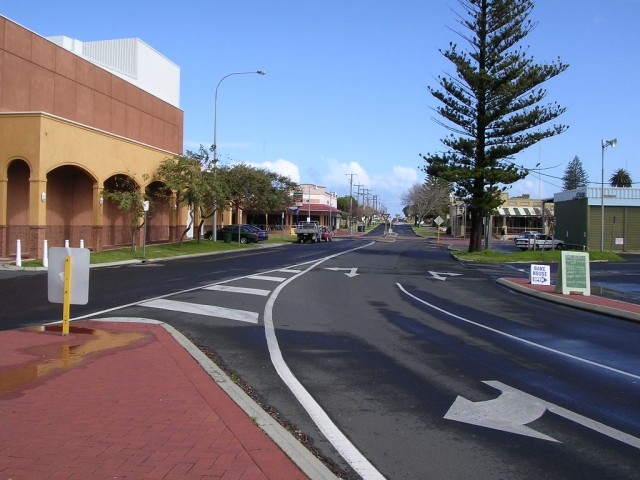
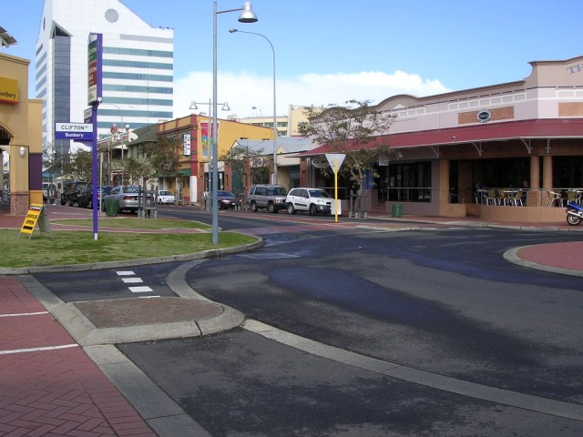
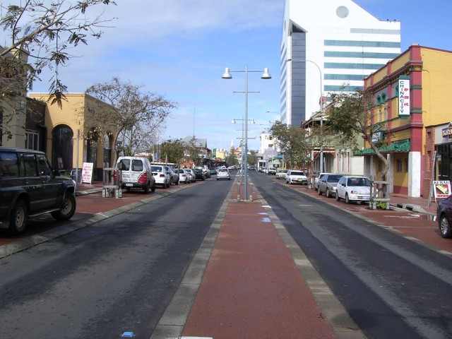
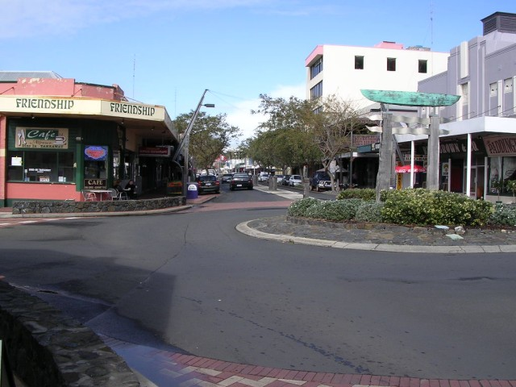
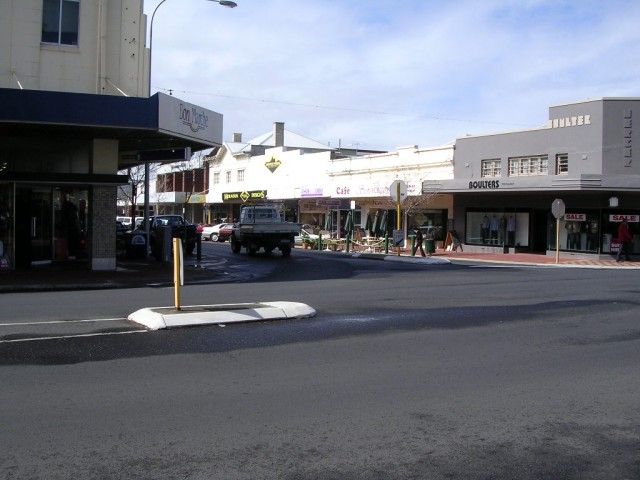

Numbers on the map represent the location where the photographs were taken. Scroll down to view the photographs.
Bunbury - Clifton Street via Victoria Street to Stephen Street
|| Contents || Clifton - Stephen | Arthur - Wittenoom | Prinsep - Carey || Home ||
Numbers on the map represent the location where the photographs were taken. Scroll
down to view the photographs.
Return to racingcircuits.net's Photo Archive Main Index

1 - Start/finish area. The road layout has been completely altered

2 - Clifton Street.

3 - Left into Victoria Street.

4 - Victoria Street now.

5 - Victoria Street now.

6 - Left turn into Stephen Street.
Photographs and Text ©Neil Fackerell. Reproduced here with kind permission.